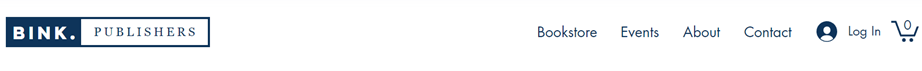
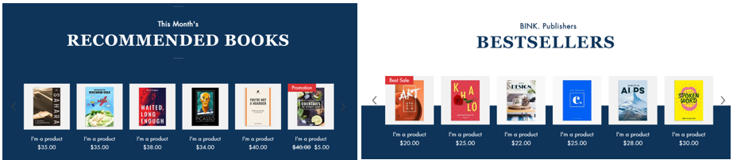

SiteMap - a separate page showing all sections, sub-sections, and information on the site. In other words, like the content of a book, that is, if we know what the book is about by looking at the content, we can find out what information can be obtained from the site from the site map.
There are two main sitemap formats:

Site constructors are systems that allow you to create a full-featured site online. Projects created with the help of the site designer are provided with a high level of security, in particular, protection against various attacks on the service, personal resources, and viruses. There are many types of site builders, namely uKit, uCoz, Ucraft, Wix, Tilda, Umi, Flexbe, A5, Setup, Nethouse and many others.
Wix.com is an advanced cloud platform popular among users. With the Wix website builder, you can easily create your own website. Creating a website is fun, convenient and free in the Wix website builder.Wix provides hundreds of customizable website templates and a drag-and-drop HTML5 editor that includes apps, graphics, image galleries, videos, fonts, and more. Templates are customizable: new features and media are added, style, colors, texts, background images, buttons, etc. are changed.
Header - the upper part: located on all site pages, consists of a menu bar and a logo
Main part - constitutes the main text of the site. Each menu in the menu bar consists of tabs. The content of the middle part of the site changes according to the theme when moving from one page to the next.
Footer - is the bottom part: located on all site pages, filled with contact information, signs of social network accounts, copyright information.
 Tasks
Tasks